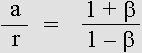
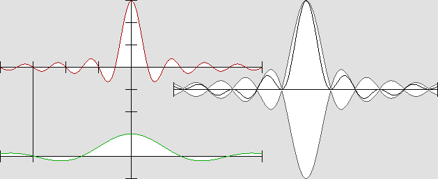

| 00 | 01 | 02 | 03 | 04 | 05 | 06 | 07 | 08 | 09 | 10 | 11| 12 | 13 | 14 | 15 | 16 | 17 | 18 | 19 | 20 | 21 | 22 | 23 | 24 | 25 | 26 | 27 | 28 | 29 | 30 | 31 | 32 | 33 | 34 |
ACTIVE AND REACTIVE MASS
|
 |
Action and reaction forces are unequal because they are caused by waves undergoing the Doppler effect.
The Doppler effect in wavelength is 1 + beta backward and 1 – beta forward.
The ratio is the same for action and reaction forces and for the Doppler effect.
The gamma factor = 1 / (1 – beta 2) (1 / 2) can also be deduced from the Doppler effect: gamma = (a + r) / m
The mass gain according to: gamma * m – m is also given by: a + r – m in accordance with the Doppler effect.
This strongly suggests that matter is made of waves.
|
Active and reactive mass. Hendrick A. Lorentz predicted that any fast moving material body should undergo a mass increase. Because matter is made of waves, which should undergo the Doppler effect, its mass or energy increase should be easily evaluated. The mass must be divided into two parts: active and reactive mass. In order to explain action and reaction, the mass waves traveling forward will be considered active, while backward ones will be reactive. Let's take an example: suppose that a material body is moving at 86.6% of the speed of light. The Lorentz beta normalized speed is .866: beta = v / c The Lorentz transformation g value is .5: g = (1 – beta 2) 1 / 2 The gamma factor (the reciprocal 1 / g) is 2 : gamma = 1 / (1 – beta 2) 1 / 2 So, according to Lorentz : beta = .866 ; g = .5 ; gamma = 2. In order to make things simple, the mass at rest is 1 kg, hence : m = 1. And because the gamma factor is 2, Lorentz predicts that the total mass M will be increased to 2 kg at 86.6% of the speed of light: M = gamma * m. Now, let's divide this total mass M into active and reactive parts. While at rest, they both equal .5 kg. However, because this wave system is moving at .866 c, it should also reduce its frequency according to Lorentz: F' = g F. This means that the wave energy should also be reduced according to g. In addition, those parts undergo the Doppler effect in opposite directions. The forward wavelength contraction is 1 – b and the backward dilation, 1 + b. Finally, the active and reactive mass values will be transformed in accordance with equations below: |
|
a = g m / 2 (1 – beta) r = g m / 2 (1 + beta) |
Active mass: a = 1.866 kg Reactive mass: r = .134 kg
Total mass: M = 1.866 + .134 = 2 kg
M = a + r
M = gamma * m
|
The total mass M is indeed increased to 2 kg exactly as predicted by Lorentz, according to the gamma factor. Actually, the diagram below shows that the mass has been increased in accordance with the Doppler effect. The point is that the wavelength forward contraction is much more severe than the backward dilation. The contraction is unlimited. But the dilation never exceeds 2 times the original wavelength. |
Active and reactive mass, explaining action and reaction.
Here, the system speed is .5 c, half the speed of light.
|
Note the equivalence: beta = (a – r) / (a + r) On the other hand, the wavelength ratio R is given by: R = (1 + beta) / (1 – beta) Or: R = a / r So the ratio is the same: |
a is the active mass, whose contracted waves exert an active force forward.
r is the reactive mass, whose dilated waves exert a reactive force backward.
The same ratio indicates that mass evolves the same way as the Doppler effect does.
|
The values 1 + beta and 1 – beta are typical of the Doppler effect. They obviously indicate that such a mass increase is directly linked to the Doppler effect. I would like to emphasize here that Mr. Milo Wolff had already noticed this. He did not propose the correct formulas, though. One hundred years ago, Lorentz predicted such a mass increase, as well as clocks ticking slower. Today, those effects have been carefully verified. Because they are linked to the Doppler effect, this strongly indicates that matter is made of waves. |
ACTIVE AND REACTIVE FORCES
|
In addition, because waves are carrying energy, the mass indicates that matter contains energy, which implies active and reactive forces. Such forces are the result of the radiation pressure. They clearly involve waves. Let's repeat that while two observers are moving at the same speed and in the same direction, they cannot detect the Doppler effect between them. This explains why two electrons moving together will act and react as if they were at rest. Their behavior is relative. Newton established that action and reaction should be equal, but this is true only from their own point of view. Action and reaction forces always seem equal from those observers' own point of view. Henri Poincaré discovered in 1904 that the laws of all physical phenomena are the same whatever the system speed. He predicted that this should lead to some "new mechanics"; he was right. From an absolute point of view, though, all forces are subject to the Doppler effect. This should seem obvious in the animated diagrams below. It shows what is wrongly called "standing waves". These waves actually are moving to the right at .5 c, and you must imagine that you are following them at the same speed. Please observe that both the frequency and the amplitude are different forward and backward. |

"Pseudo-standing waves" in the vicinity of the electron's central core.
Active mass waves are moving to the right and reactive ones to the left.
The A amplitude (and wavelength) R ratio is given by: R = (1 + beta) / (1 – beta)
Here, v = .5 c, hence: beta = .5 ; R = 3; A1 = 75 % ; A2 = 25 %.
|
The diagram shown above represents the electron's active and reactive waves along the displacement axis only. Observe that the compressed waves are three times shorter, but that they also seem to move to the right three times slower. So their effective frequency (more exactly their rate) remains the same in both directions. This explains why the Doppler effect cannot be detected inside any moving frame of reference. For the same reason, any electron following or preceding another one with act or react with it in the same way. The animated diagram below shows plane "pseudo-standing waves": |
|
|
Plane "pseudo-standing waves": v = .5 c ; beta = .5 ; A1 = 65 % ; A2 = 35 %.
Here, you must imagine that you are moving to the right at the same speed.
The nodes and antinodes are bouncing on each other as a result of opposite forces;
this explains the radiation pressure mechanism.
|
The above diagram shows that the nodes' and antinodes' speed is not constant inside a pseudo-standing wave set while both the wavelength and the amplitude are not the same. In addition to being pushed forward, they are somehow "shaken" as a consequence of the non linearity of the active and reactive forces. Radiation pressure. This phenomenon indicates that the electron central antinode should be very sensitive to the radiation pressure caused by any additional wave. While more waves are added from one direction, the electron normal inertia is destroyed. The particle can be accelerated or slowed down. It can also be deviated. I made a very sophisticated computer program in order to show how ingoing hemispheric waves would behave in the vicinity of their center of curvature. This program does not use any equation, just Huygens' Principle. Because this principle has never been invalidated, this program is the most accurate and reliable ever. If you do not believe me, please note that this phenomenon can be verified using hemispheric ingoing sound waves. |
|
|
Hemispheric waves incoming from the left and outgoing to the right, simulating the immobile electron's active mass.
The complete electron stays at rest because of the identical and opposite wave set, which contains the reactive mass.
But as soon as the active waves become stronger, the central antinode is constantly pushed forward.
|
There is no Doppler effect inside a system at rest. Then the active mass and the reactive mass are equal. As soon as the forces become unequal, the central antinode is pushed forward, and the waves undergo the Doppler effect. Then the wavelengths are no longer the same and the electron will go on moving constantly. Inertia. This was Newton's first law as the Inertia Principle. However, Galileo had already described this. Both of them had stated that any moving object should go on moving on a straight line unless it is slowed down, accelerated or deviated by some force. This behavior may seem obvious, but it had to be explained. One must also explain why and how such a force can destroy the normal equilibrium. This is especially important because one must also reconcile the existence of the aether. Returning back to the 19th century, this had been a rather painful problem. Most physicists were aware that: " Aether does not affect motion ". Let's face it: apparently, inertia is incompatible with the existence of the aether. But as soon as one realizes that matter is made of waves, this objection is no longer relevant. The action and reaction law. Separating matter waves into active and reactive forces will allow us to predict in a very convincing way the action and reaction phenomenon. Because the Doppler effect is perfectly reversible, just the speed difference (not the absolute speed) must be taken into account. Two billiard balls hitting each other will behave in accordance with the Doppler effect. It is that simple. Firstly, one must realize that there is no true contact. While one ball is hitting another one, a force occurs because, for very small distances, electrons inside atoms or molecules come much closer than protons. Mostly there is an electrostatic negative force hence a repulsion effect. This force is the result of waves exerting a radiation pressure. According to the wave mechanics, all forces including contact pressure act by means of waves. Moreover, this pressure changes according to the cosine of the impact angle, exactly the way the Doppler effect does, as given by: lambda' = lambda * (1 – beta cos phi) F ' = F / (1 – beta cos phi) The phi angle is postulated to be 0 straight ahead and reaches 180° on the axis backward. This hypothesis indicates that oblique collisions indeed work according to Pythagoras' theorem and to Newton's laws. For instance, the force ratio for any material body traveling at .866 c would be 1.866 vs. .5 only for a similar one which is at rest. There is just one situation where the old action and reaction law is still valid. This occurs when one of them is at rest and when the collision angle is 0: According to Lorentz and Poincaré, this law proves to be wrong. The problem mostly arises because of the mass increase. In addition, any observer may consider himself at rest in accordance with the law of Relativity. From an absolute point of view, he is not though. This observer may look at two billiard balls which are both moving, and so there are three different speeds involved. Because of its reciprocity, one simply cannot use Einstein's Relativity in order to calculate three moving frames of reference simultaneously. A contradiction immediately appears. For the same reason, Henri Poincaré's symmetrical equations are useless. The best example would be two electrons traveling at .9999c in opposite directions inside a synchrotron. From the collider point of view, their relative speed obviously can reach almost two times the speed of light, and this is impossible according to Relativity. I strongly believe that, realizing this, Poincaré would not have doubted the aether. Working together with Lorentz, their version of Relativity would have prevailed. There indeed is a Lorentzian Relativity, but Lorentz neglected to word it. Nobody did until many recent studies made it suddenly reappear. I strongly aver that it is the correct one. The action and reaction problem demands Lorentz's version of Relativity, not Poincaré's nor Einstein's. Then one can examine the transformation values for two moving bodies and finally determine how they will act and react. Action and reaction are linked to the Doppler effect. Thanks to Lorentz, a new action and reaction law could be worded this way: "Any action produces a simultaneous reaction proportional to the wave energy undergoing the Doppler effect, and in the direction opposite to the waves' origin." Some waves can exert a negative action, hence an attractive force. Gravity, for example, the shade effect, opposite electrostatic charges, etc. Then the reaction is also negative. For mechanical reasons, a true attraction effect is impossible and all true forces are positive. An attractive force is actually a positive force due to incoming waves from the opposite direction. Because of the Doppler effect, action and reaction are not really simultaneous; the waves' relative speed is no longer the same in opposite directions. But from the observer's point of view, it seems to be the same. Lorentzian Relativity shows that the clocks do not indicate the same time along the displacement axis, producing a virtual simultaneity. The action and reaction process also justifies the conservation of mass and energy. The above example shows that when a billiard ball hits another one, the mass increase responsible for kinetic energy is simply transferred to it and the two balls' total mass remains unchanged. Causes and effects. Action and reaction should be distinguished from causes and effects. This is highly discussable, but a true cause and effect process cannot be simultaneous in order to obtain a domino effect. The wave mechanics proposes a new Causality Principle involving the aether waves: "Any effect has a cause, any effect becomes a new cause, and any cause is transmitted by the aether waves at the speed of light." Explaining this process from a mechanical point of view, let's consider kinetic energy. Kinetic energy. Because a mass increase occurs, the kinetic energy is not given by: E = m v 2 / 2 according to Newton. While a material body is moving at .866 c, the mass is doubled and this kinetic energy is worth exactly its mass at rest. Moreover, this mass as energy does not need to be stopped during a collision, and so one must establish a new equation according to Poincaré's expectations: "We will perhaps need to invent some new mechanics that we can hardly foresee where inertia increases with the speed in such a way that the speed of light would be an insuperable limit." Clearly, the gain in mass, which equals: a + r – m or: g m – m, is responsible for kinetic energy. And because the body's total mass is doubled at .866 c, one must realize that half of its mass contains solely kinetic energy. Two identical energy or mass values are hiding inside the same body, and they have the same properties. Moreover, both of them are linked to the famous c squared, and also to the Doppler effect. This strongly indicates that those two masses are identical and that they have a wave nature. Poincaré could not know that. But today, no doubt, one can proclaim that the waves responsible for matter are the same ones which are responsible for kinetic energy. Inertia is the response to a force, and they oppose themselves. We are dealing with waves, and waves contain energy because they produce a radiation pressure, hence a force. Mass is the measure of inertia, and this allows us to allot to the aether waves an equivalent mass. Poincaré indeed gave the equivalent of Einstein's formula in connection with the inertia of waves. Because matter is made of waves, his formula becomes highly important and strangely relevant: m = E / c 2 hence, quite obviously: E = m c 2 Mr. Jules Leveugle writes that in 1900, Henri Poincaré did establish that the electromagnetic radiation has such an equivalent inertia. He adds that F. Hassenhörl and G. Lebon (who was wrong because of the division by two) also proposed similar schemes. Once again, Poincaré did precede Albert Einstein. I personally affirm that electromagnetic waves do not exist. The nature of radio and light waves is the same as all other aether waves, which are responsible for action and reaction. Knowing this, and even if Poincaré was not fully aware of his discovery, his equation was published in 1900, well before Einstein's 1905 paper. So it must prevail. I did not read Poincaré's text, but I presume that his reasoning was as good as Einstein's. Einstein did nothing but again take the corollary, which is the inertial reaction that a material body would oppose to a light pulse. He had most probably read Poincaré's paper, and so his "discovery" is no longer amazing. Explaining Newton's division by two. Firstly, let's review the MKS (meter, kilogram, second) units system: 1 - The mass m in kilograms. 2- The energy E in joules. 3- The c and v speed in meters per second, and so: c = 1000 times 300 000 km. Newton's formula for kinetic energy works for small speeds, but otherwise it becomes wrong: E = m v 2 / 2 This division by two can easily be explained. When a billiard ball hits another one which is at rest, half of the kinetic energy must be used in order to stop the moving ball. The other half can push the other ball until it reaches the same speed. However, for projectiles moving at a speed very near to the speed of light, its total mass is much greater then its mass at rest. The energy needed in order to stop such a small part of the projectile is negligible, and so most of the kinetic energy becomes fully effective. In such a case it is doubled: E = m v 2 And because such a fast speed is almost the speed of light, one obtains almost: E = m c 2 So this reasoning can demonstrate in a new and spectacular way that this famous equation is relevant. This leads to the following equations: E = M v 2 / (1 + g) E = m v 2 / (g + g 2) These formulas yield the same results as the standard one shown below, on the right. Mass and energy. One can use any of the three formulas below in order to obtain the correct value for kinetic energy. The one on the right is well acknowledged today. Let's repeat that the m mass is in kilograms, the speed in meters per second and the energy in joules. Then the kinetic energy stored inside the mass of any moving material body is given by: E = m v 2 / (g + g 2) E = (a + r – m) c 2 E = (gamma * m – m) c 2 Its total energy is given by: E = (a + r) c 2 E = gamma * m * c 2 When the material body approaches the speed of light, its kinetic energy is almost equal to its total energy. Clearly, this energy which itself opposes inertia, and which is linked to the Doppler effect, has the same properties as the mass at rest. This mass is the measure of inertia in any case. So matter is nothing but canned energy, and energy as well as inertia definitely can be evaluated in grams. This means that units such as the joule are redundant, hence useless: 1 Kg = c 2 joules. Poincaré showed that any radiation contains energy, hence an equivalent mass which can be evaluated in grams. He was also well aware that any radiation could exert a radiation pressure. However, matter only is subject to this pressure in accordance with its inertia.. All forces including gravity are caused by waves. Because the radiation pressure is effective on matter standing waves only, gravity cannot bend the light path. We know very well that the light does deviate near the sun, but one surely can explain this phenomenon in a different way. I presume that the solar wind or interstellar particles could be involved. The rubber balls analogy. Surprisingly, as seen in the formulas showed above, all happens as if, inside matter, the energy was constantly moving at the speed of light. This gives raise to this stunning analogy: |
|
Any material body acts or reacts as if it were a finite box containing millions of rubber balls which where constantly moving in all directions. |
The rubber balls analogy.
|
In order to avoid losses, one can imagine an orbiting metal box containing 100% vacuum and hundreds of such moving rubber balls which are postulated to be absolutely lossless. If the box is accelerating, those balls become faster in the direction of motion. Conversely, they become slower backward. They undergo a sort of Doppler effect, but the wave contraction or dilation is reverted. The balls become more distant from each other in the direction of motion. This effect is cancelled by the balls speed, which is faster. When they are bouncing on the box surface, they communicate their kinetic energy to the box. Let's consider that the box itself has no mass and no inertia. This phenomenon may explain why such a moving box will go on moving. It will indeed explain inertia. As seen above, the active mass waves are pushing on the electron's core this way, explaining both its speed and inertia. Finally, lets suppose that a second box hits the first one. During this process there is no box surface between them. Then the balls will move freely from one box to another; they will push on the boxes opposite surface. This is the equivalent of the radiation pressure. Moreover a certain number of balls will definitely be transferred to the first box. This is the equivalent of the increase in mass. Basically and mechanically, the active and reactive mass work like this. But such a wonder can only be achieved by waves. Once again, this strongly indicates that matter is made of waves. The speed of light is an insuperable limit. The active mass, hence the total mass trends toward infinite while a material body approaches the speed of light. This means that Poincaré was amazingly right in 1904 when he stated that the speed of light is an insuperable limit. Many people misapprehend that some phenomena involve speeds faster then the speed of light, but they are wrong. On the one hand, matter can approach the speed of light, but it simply cannot reach it. On the other hand, all forces are transmitted by aether waves, whose speed is constant and equal to that of light. Firstly, action and reaction implies simultaneous effects, and this may induce an error. Secondly, one can also act on some invisible and unknown intermediate field such as an electromagnetic one. This field is made of plane standing waves between two electrons. It may be considered as virtual matter which is fully subject to the radiation pressure even when those electrons are very distant from each other. Clearly, while acting on this field, one will obtain a simultaneous effect on both electrons, but this effect will seem to have happened instantly. Because photons do not exist, one cannot affirm that those photons may have changed suddenly and simultaneously well after the light has been emitted. One must realize that light is transmitted without any change only inside a vacuum. As soon as it encounters matter, which may be transparent as well, some new light is constantly created which interferes with the previous one. Its polarization or its phase may certainly be modified during the propagation process. So any instantaneous action at a distance is impossible. Some experiments may indicate that it is possible, but they surely have been misinterpreted. |
| 00 | 01 | 02 | 03 | 04 | 05 | 06 | 07 | 08 | 09 | 10 | 11| 12 | 13 | 14 | 15 | 16 | 17 | 18 | 19 | 20 | 21 | 22 | 23 | 24 | 25 | 26 | 27 | 28 | 29 | 30 | 31 | 32 | 33 | 34 |
|
|
Bois-des-Filion in Québec. Email Please read this notice. On the Internet since September 2002. Last update December 3, 2009. |